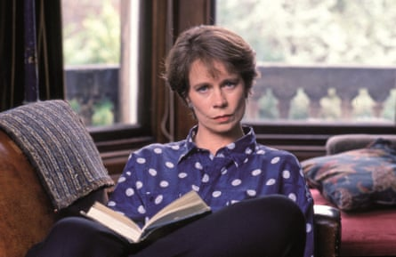

20. Nanny McPhee (2005)
Emma Thompson’s Mary-Poppins-with-warts is a dog’s dinner of a movie, but Celia Imrie amuses herself (and occasionally us) with a broader-than-usual turn as the widowed Mrs Quickly, who is pursuing a father of seven (Colin Firth) forced by his aunt to marry within 30 days or face penury. Imrie cites this as one of her favourite roles, despite having a live tarantula on her head in one scene and a wriggling worm in her mouth in another.
19. House of Whipcord (1974)
Among Imrie’s earliest credits was this exploitation horror about a secret, sadistic correctional institute for young women. Barely glimpsed amid the frenzy of whipping, she tries to alert the outside world by throwing a Bible from a window. “Whenever I am in one of those awful out-of-the-frying-pan situations where you escape only to end up back where you started, I still use the phrase: ‘How House of Whipcord!’” she recalled in her 2012 autobiography, The Happy Hoofer.
18. Star Wars: Episode I – The Phantom Menace (1999)
All guns blazing … in The Phantom Menace.Photograph: Lucasfilm
A casting director spotted Imrie opposite Harold Pinter in his play The Hothouse and recommended her to George Lucas for the tiny role of the fighter pilot Bravo 5. She wore rust-coloured jodhpurs, but, on Lucas’s orders and to her chagrin, no lipstick: “I did my bit and fired my guns, but I haven’t a notion what side I was on, who I was firing the guns at, who I was hitting and whether or not we won.”
17. Bridget Jones’s Diary (2001)
Nothing very much for Imrie to do as Una, the best chum of Bridget’s mother, beyond presiding over the barbecue and offering to sieve the gravy, but she gets the occasional faux pas and adds generally to the impression of a high-calibre cast free of dead wood. She returned for extra helpings in the sequels.
16. Absolutely Fabulous: The Movie (2016)
Rivals … Imrie with Jennifer Saunders(right)and Jane Horrocks in Absolutely Fabulous: The Movie.Photograph: David Appleby/Fox Searchlight/Allstar
Feeling more like a victory lap than a fully fledged movie, this allows Imrie to reprise her sitcom role as Claudia Bing, the PR rival to Jennifer Saunders’ Edina Monsoon. It is Claudia who blows the whistle after Edina apparently kills Kate Moss by knocking her into the Thames, and Claudia who prevents Jon Hamm from rushing valiantly to the model’s aid.
15. Highlander (1986)
‘Full rustic wench costume’ … in Highlander.Photograph: Landmark Media/Alamy
Imrie was kitted out in “full rustic wench costume” for this time-travelling folkloric fantasy, but Christopher Lambert was too weedy to lift her on to his horse for the intended goodbye kiss. Instead, she simply grabs his calf and jogs beside him “while delivering the dialogue that I should have been doing as we galloped along together”. There was more drama for her off-screen than on: she was briefly snatched from her hotel by a man who declared himself intent on continuing the Pictish tradition of kidnapping women.
14. Revelation (2001)
This The-Omen-meets-The-Da-Vinci-Code potboiler stars James D’Arcy as the cryptographer uncovering a plot to revive the antichrist. Po-faced Terence Stamp and Udo Kier have considerably less fun than Derek Jacobi, seen fleetingly as a librarian who brandishes a pair of cotton gloves and promises to check Isaac Newton’s papers “for stains and so on”. Imrie is the hero’s mother, burnt to a crisp in only her second scene and squeezing out her final words in a high-pitched squeak.
13. Mamma Mia: Here We Go Again! (2018)
Razzle-dazzle … watch Imrie swap her mortar board and gown for a feather boa.
Most of the razzle-dazzle in this part prequel, part sequel comes courtesy of Cher, who makes her entrance by helicopter. But Imrie lets her hair down as the vice-chancellor of Oxford university on graduation day. Once Lily James, as the young version of Meryl Streep’s character, Donna, has warbled her share of When I Kissed the Teacher and zoomed off across the quad, Imrie leaps from the stage trailing a canary-yellow feather boa and trilling: “What a mad day!”
12. Imagine Me and You (2005)
Nuanced delights … with Anthony Head and Piper Perabo in Imagine Me and You.Photograph: TCD/Prod.DB/Alamy
In this London-set lesbian romcom, the newlywed Piper Perabo leaves her husband for the florist (Lena Headey) who supplied their wedding bouquets. As the bride’s mother, Imrie nails the character in her haughty opening lines: “Darling, tell your father he can’t wear that suit … I’ve seen better dressed crab.” But there are nuanced delights to come, including the thawing of relations between Imrie and her husband (Anthony Head) during the sort of last-minute race through traffic that was compulsory in Britcoms of the Richard Curtis era.
11. A Cure for Wellness (2016)
If there were ever a movie star in dire need of a spell at a Swiss spa resort, it’s the sickly looking Dane DeHaan. In this horror inspired by Magic Mountain and Shutter Island, he is the executive sent to retrieve a colleague, only to find madness and murder afoot. Imrie, first seen doing a crossword with her fellow bathrobed guests, dispenses gobbets of backstory about the institute’s sinister origins. With prim lips and loaded stares, she delivers her portentous dialogue with aplomb. “There is a terrible darkness here,” she warns DeHaan. Next stop: the morgue.
10. Year By the Sea (2016)
Manic pixie dream aunt … in Year By the Sea.Photograph: Montabela Productions/Kobal/Shutterstock
Emerging from the Cape Cod fog like a mermaid, Imrie plays one of the wacky catalysts for a disillusioned writer’s journey of self-discovery, offering a slogan for every occasion: “Who wants the burden of control?” “If we can’t show our feelings, we might as well be men!” She has a fine rapport with the film’s lead, Karen Allen (of Raiders of the Lost Ark), but her character is essentially a manic pixie dream aunt who twirls coloured scarves, whoops among the waves and impishly ignores the “Do Not Enter” signs around the lighthouse. Imagine Fried Green Tomatoes at the Whistle Stop Cafe , but served as a side, not a main.
9. The Best Exotic Marigold Hotel (2011)

Pastures new … Imrie and Judi Dench in The Best Exotic Marigold.Photograph: Fox Searchlight Pictures/Sportsphoto/Allstar
With Maggie Smith, Judi Dench, Bill Nighy and Tom Wilkinson, this Brits-in-India getaway is the Avengers Assemble of older British character actors. Imrie gets the slimmest pickings plot-wise, as the grandmother who opts for Jaipur rather than an eternity of babysitting. She packs her shrewd smirk and that reliable libido (on securing an airline upgrade: “I had to flirt so hard with the travel agent it was practically phone sex”) and gets several other choice lines, complaining about getting old (“I don’t want to be the first person they let off the plane in a hostage crisis”) and offering terse advice on how the unhappily married Nighy could celebrate his 40th wedding anniversary (“Perhaps a minute’s silence?”). A 2015 sequel offered her character a glimmer of romance.
8. What We Did on Our Holiday (2014)
Or Outnumbered: The Movie. The writer-directors Andy Hamilton and Guy Jenkin preserve the partly improvised nature of their kids-say-the-darnedest-things sitcom while replacing its stars, Hugh Dennis and Claire Skinner, with David Tennant and Rosamund Pike. The “sit” in this “com” is the birthday party of their dying grandpa (Billy Connolly). After he expires on the beach in the company of the children, Imrie is called in from the child welfare unit. Reacting with understated incredulity to the kids’ tales of Viking funerals and the Norse god Odin, she rounds up their crayon drawings as evidence.
7. The Borrowers (1997)
Delightful … with Jim Broadbent in The Borrowers.Photograph: Working Title Films/Allstar
Mary Norton’s adventure novel about a tiny resourceful family who live in the skirting boards and hide from “human beans” has been the source of numerous adaptations, including Studio Ghibli’s Arrietty in 2010. This inventive British version, with Imrie and Jim Broadbent delightful as the parents and John Goodman in full panto mode as the hissable developer threatening their home, is a charmer. Gemma Jackson’s production design is a special highlight. “It was fabulous walking around the gigantic chair and table legs and sitting on huge cotton reels,” said Imrie.
6. Hilary and Jackie (1998)
Tenacious mother … with Charles Dance in Hilary and Jackie.Photograph: Moviestore/Shutterstock
In a structurally daring biopic scripted by Frank Cottrell Boyce and carved into two contrasting perspectives, Imrie plays the tenacious mother of the cellist Jacqueline du Pré ( Emily Watson ), encouraging competition with her sister Hilary ( Rachel Griffiths ). “If you want to be together, you’ve got to be as good as each other,” she insists, establishing a pattern of rivalry that splashes over into their love lives.
5. Love Sarah (2020)
In her early scenes as the grieving mother Mimi, Imrie makes you realise that, with the help of some heavyweight roles, she could have approached the gravitas of her pal Glenda Jackson (she was Goneril to Jackson’s Lear in 2016). Just look at her deep grooves of experience and regret, her instant access to purse-lipped froideur. That dissipates as Mimi helps to launch the west London patisserie her late daughter never got the chance to open and tensions vanish beneath a dusting of feelgood whimsy thicker than several inches of icing sugar. But Imrie is highly watchable in her flirtations with the neighbourhood inventor (Bill Paterson), whom she invites up for coffee. If it isn’t decaf, he says, he’ll be “up all night”. Cue the naughty Imrie twinkle: “Lucky me.”
4. Malevolent (2018)
This haunted-house horror stars Florence Pugh and Ben Lloyd-Hughes as bogus ghostbusters hired to rid a country mansion of the screams of the wee poppets who were murdered there. Imrie was their foster mother, her son the killer, so it’s no surprise when she announces that the brats had it coming. What is striking is how she maintains her cool, and keeps the volume down, even once she turns torture-porn-style aggressor. “It’s quiet time now,” she whispers, approaching her victim’s mouth with a needle and thread. It all goes a bit wild after she whips the hacksaw out.
3. Calendar Girls (2003)
Cherry on the cake … in Calendar Girls.Photograph: Alamy
Time has been kind to this factually inspired Britcom about the Women’s Institute members – played by stars including Helen Mirren, Julie Walters and Linda Bassett – who strip for a charity calendar, ruffling feathers but raising enough to fund an entire leukaemia ward at their local hospital. Eventually, they end up in Hollywood, hob-nobbing with Jay Leno and the thrash metal band Anthrax, of all people. Imrie gives lots of comic side-eye as she works out with a hot young trainer in preparation for the big shoot; she is the only one to express disappointment that her breasts will be tastefully concealed in the final product. “Yours good, are they?” asks Mirren, to which she coolly replies: “They’re tremendous .” Accept no Imrie-tations.
2. Finding Your Feet (2017)
Free spirit … with Imelda Staunton in Finding your Feet.Photograph: Moviestore Collection/Alamy
Imelda Staunton is the hoity-toity snob (“Lady Nevershit”, as she is referred to) who flees her cheating husband and moves in with her wild-swimming, dope-smoking, bisexual sister, Bif (Imrie), in the latter’s council flat, as well as joining her and classmates Timothy Spall and Joanna Lumley at the local dance group. Imrie is in free spirit mode again, but more complex here than in Year By the Sea – although, weirdly, both films show her boogieing to the Big Bopper’s Chantilly Lace. Until cancer puts paid to her Extinction Rebellion vim, she exudes sexual swagger. “Thirty minutes and I’ll be good to go,” says her date, waggling a blister pack of Viagra. “I’ll get you there in 10,” she grins.
1. Blue Black Permanent (1992)
Faintly formidable … in Blue Black Permanent.Photograph: BFI
The only feature to be directed by the Orkney-based poet and film-maker Margaret Tait gave Imrie an early dramatic lead. She plays Barbara, a discontented photographer puzzling over the life and death of her mother, who drowned years earlier. Was it sleepwalking or suicide? Sifting episodes from her own and her mother’s childhood, Barbara dreams of flying, wrestles with guilt (“I should have been able to stop her, or save her”) and spars with her own lover, played by the perpetually sanguine Jack Shepherd. This gives Imrie room to exhibit her brittle, indignant intelligence and to sigh an awful lot. With her faintly formidable air, it’s easy to imagine she could have become the next Charlotte Rampling.